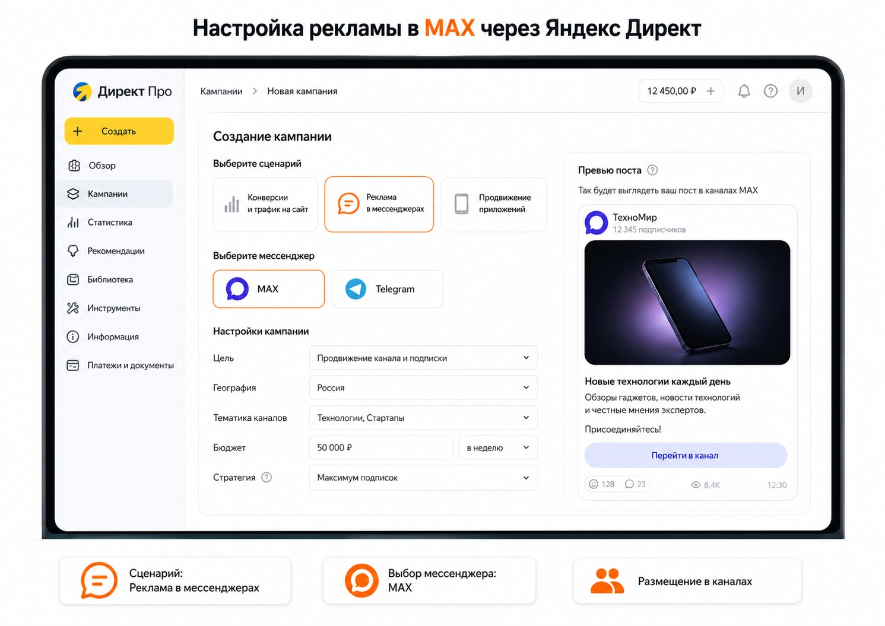
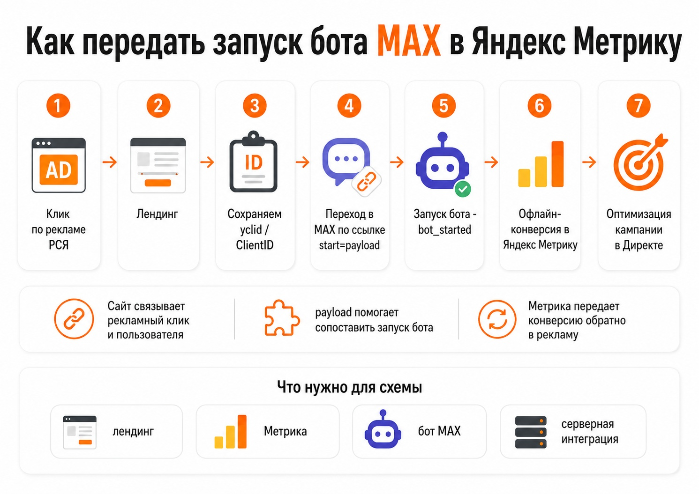

Блог о платном трафике
Реклама в MAX через Яндекс Директ
Продвигать канал или бота в MAX через Яндекс Директ можно двумя способами: размещать рекламные посты непосредственно в каналах MAX или вести трафик через промежуточную страницу и передавать действия пользователя в Метрику.
Первый вариант проще: Директ сам подбирает площадки или позволяет выбрать конкретные каналы. Второй сложнее, зато дает возможность обучать рекламу на фактическом запуске бота или подписке, а не только на переходе в мессенджер.

Встроенная реклама в MAX через Яндекс Директ
С мая 2026 года Яндекс позволяет размещать рекламные посты в каналах MAX непосредственно из Директа. В интерфейсе появился отдельный сценарий «Реклама в мессенджерах». Можно выбрать только MAX либо одновременно MAX и Telegram.
Автоматический подбор каналов
Рекламодатель задает тематику и географию, а Яндекс автоматически выбирает подходящие каналы MAX из Рекламной сети Яндекса. Кампания создается в Директ Про через сценарий «Реклама в мессенджерах» или Единую перфоманс-кампанию с местом показа «Мессенджеры». Для MAX доступна оплата за клики.
Выбор конкретных каналов MAX
В каталоге Директа можно самостоятельно выбрать каналы, в которых должен выйти рекламный пост. Фильтры помогают отбирать площадки по тематике, региону, количеству подписчиков, прогнозной стоимости, CPV, полу аудитории и другим параметрам. В этом варианте рекламодатель бронирует размещение и платит за фактические просмотры публикации.
Для продвижения собственного канала MAX можно использовать пригласительную ссылку. Получается короткая воронка: рекламный пост в MAX → канал MAX → подписка.

Главная проблема прямой рекламы - отслеживание подписок
Клики и рекламные расходы в Директе посмотреть несложно. С реальными подписками ситуация пока хуже: статистику подписчиков в разрезе разных пригласительных ссылок и источников привлечения получить нельзя. Можно увидеть клики по рекламе и общий прирост аудитории канала, но связать каждого нового подписчика с конкретным объявлением значительно сложнее.
Если задача кампании - просто увеличить аудиторию канала, этого иногда достаточно. Если нужно оптимизировать рекламу по стоимости реального подписчика или запуска бота, полезнее связка с промежуточным сайтом.
РСЯ → сайт → MAX: зачем нужна промежуточная страница
Вторая схема выглядит так: объявление Яндекс Директа → лендинг → MAX → целевое действие. В качестве источника трафика можно использовать РСЯ, поиск или смешанный вариант. Подробнее об источниках - в статье как работает Яндекс Директ.
Промежуточная страница нужна не только для описания канала или бота. На ней можно сохранить рекламные идентификаторы пользователя: yclid и ClientID Метрики. Клик по кнопке перехода в MAX уже можно считать целью, но он не показывает, запустил ли человек бота или подписался на канал.
Как передать запуск бота MAX в Яндекс Метрику
MAX поддерживает диплинки для чат-ботов. В параметре start можно передать собственный идентификатор длиной до 128 символов. Когда человек запускает бота, MAX отправляет событие bot_started и возвращает переданный payload.
- Человек кликает по рекламе Яндекс Директа.
- На лендинге сохраняются
yclidилиClientID. - Для посетителя создается короткий идентификатор и добавляется в диплинк MAX.
- Человек переходит в MAX и запускает бота.
- MAX отправляет на сервер событие
bot_started. - Сервер сопоставляет идентификатор с рекламным кликом и передает событие в Метрику как офлайн-конверсию.
Метрика позволяет связывать офлайн-конверсии с рекламными визитами по ClientID, UserID или yclid. Тогда Директ получает данные о фактическом запуске бота, а не только о клике по кнопке.

Можно ли так же отслеживать подписку на канал MAX
MAX API поддерживает событие user_added, которое возникает, когда пользователь добавляется в чат или канал. У обычной ссылки на канал нет удобного параметра payload, поэтому напрямую связать подписку с рекламным кликом сложнее.
Один из рабочих вариантов - сначала вести пользователя в бота: реклама → лендинг → бот MAX → канал MAX. При запуске бота можно связать пользователя с рекламным кликом, а после события user_added передать подписку в Метрику. Для этого нужна собственная серверная интеграция.
Упрощенный вариант без собственного сайта
В самом Яндекс Директе можно бесплатно создать одностраничный сайт. В его контактах поддерживается MAX, на лендинге автоматически работает счетчик Метрики и создаются цели, в том числе на переход в мессенджер.
Получается связка Яндекс Директ → лендинг Яндекса → MAX. Она позволяет быстро запустить кампанию и видеть переходы в MAX, но не фактическую подписку или запуск бота.
Какой способ рекламы MAX через Яндекс Директ выбрать
Для быстрого набора аудитории канала стоит начать со встроенной «Рекламы в мессенджерах». Можно доверить подбор площадок алгоритму или выбрать конкретные каналы MAX.
Если MAX является частью воронки товара или услуги, лучше вести трафик через лендинг. На нем можно объяснить предложение, собрать дополнительную аналитику и перевести человека в бот. При KPI в виде запуска бота, подписки или дальнейшей продажи имеет смысл возвращать эти события в Метрику как офлайн-конверсии. Проверить передачу целей помогает инструкция как проверить цель в Яндекс Метрике.
Что я бы использовал на практике
Для информационного или экспертного канала я бы сначала протестировал рекламу непосредственно в каналах MAX через Директ. Путь пользователя короткий, а для запуска не требуется отдельная техническая инфраструктура.
Для бизнеса, где бот собирает заявки, квалифицирует пользователя или ведет его дальше по воронке, интереснее связка через сайт и Метрику. Кампанию стоит оптимизировать не только по клику «Перейти в MAX», а по действию, которое связано с бизнес-результатом: запуску бота, квалифицированному лиду или заявке. Подробнее о настройке и ведении кампаний - на странице услуг по Яндекс Директу.
Частые вопросы
Можно ли рекламировать канал MAX напрямую через Яндекс Директ?
Да. В Директе есть отдельный сценарий «Реклама в мессенджерах». Можно размещать посты непосредственно в каналах MAX и вести пользователя на собственный MAX-канал.
Нужен ли сайт для рекламы MAX?
Нет. Для прямого продвижения канала сайт не требуется. Если нужна промежуточная страница, но собственного сайта нет, лендинг можно создать непосредственно в Яндекс Директе.
Можно ли обучать Яндекс Директ на запусках бота MAX?
Да, но потребуется интеграция. После сопоставления запуска бота с yclid или ClientID это действие можно передать в Метрику как офлайн-конверсию и использовать для оптимизации рекламы.